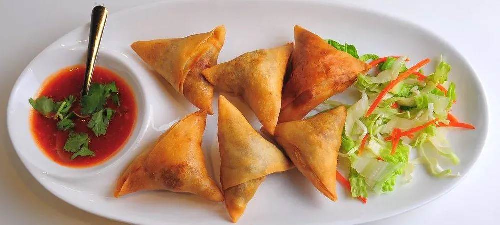
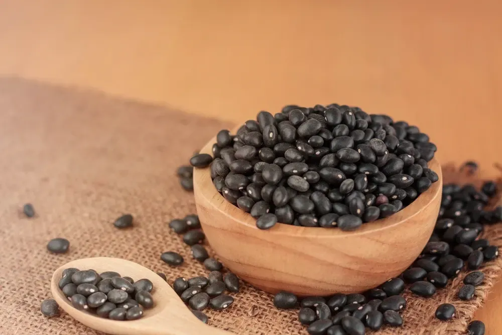
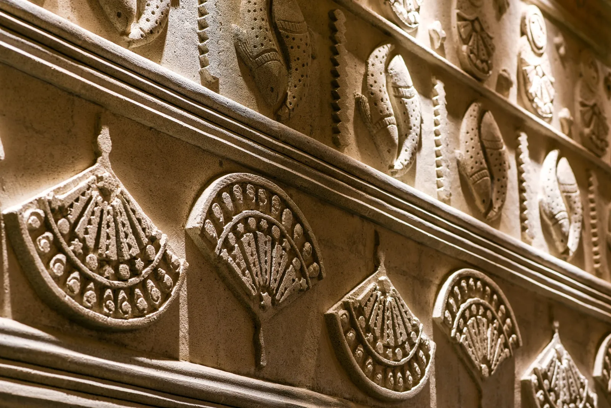
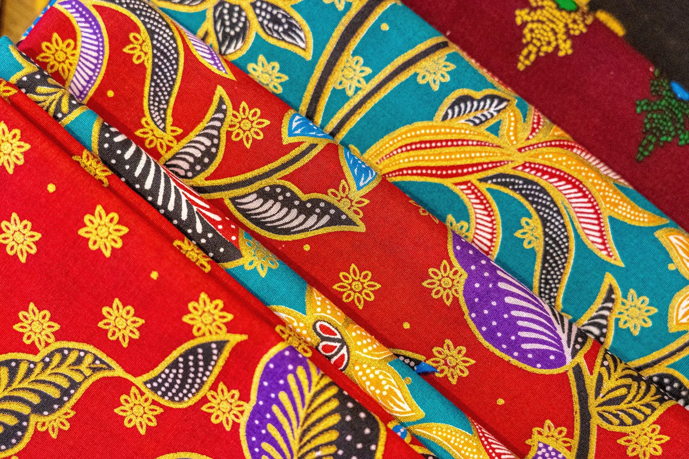
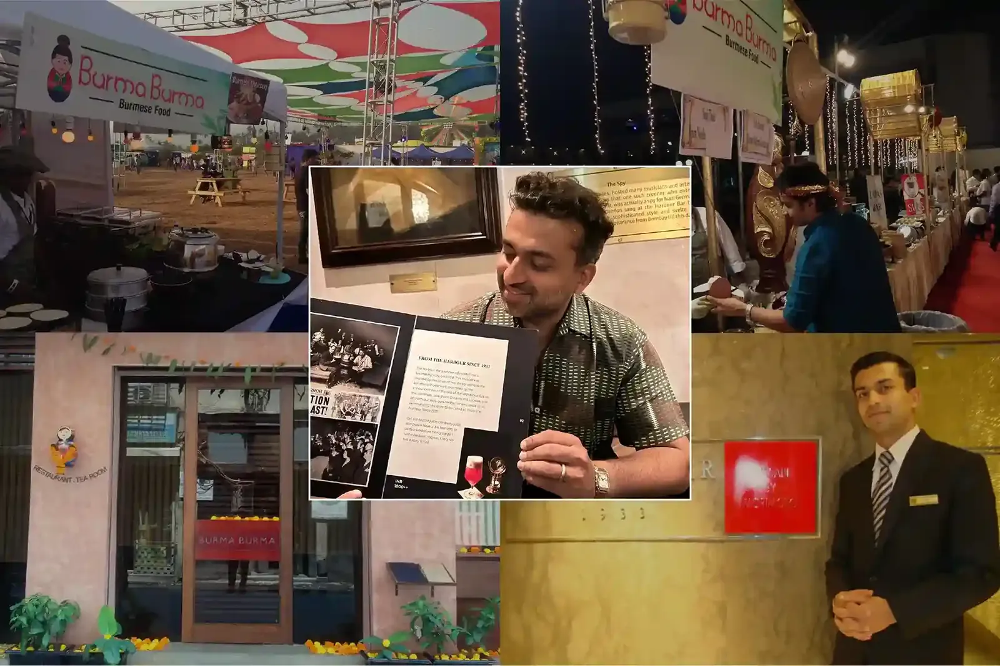
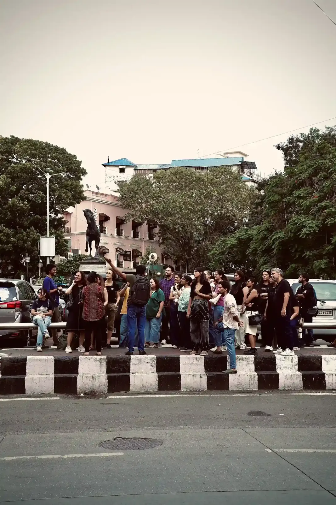

Gallery
The food, the room, and the country it comes from.
Click any photograph to open it.
On the table
The food






On Front Street
The room


Where it comes from
Burma
Photographs from Myanmar — the markets, the tea, and the country that taught us all of this.





